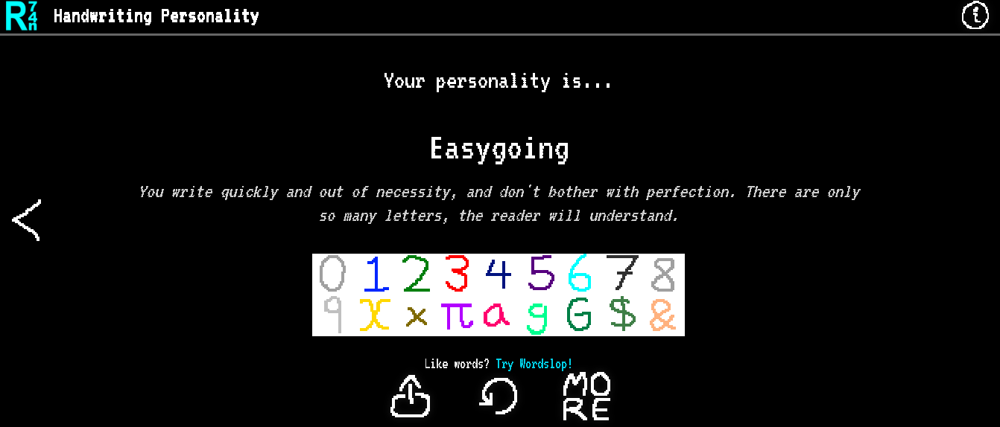

Do not go gentle into that good night
02:29am 30th August 2026
Welcome to the 9th post of my weekly newsletter where I share some of the best parts of the internet along with what I make of them. This week I was rewatching the GTA 6 Extended look atleast 10 times, Shifted the last bit of workflow I had to obsidian, discovered some fun little websites and saw this quote by Dylan Thomas which I resonated with quite a lot!! Here it is:
The Things:
- Modern TV Is Designed for Dumb People. I have been seeing this Jett Fraazen guy on Substack a lot too, he has some interesting thoughts!
- I shifted my movie, TV show, books list to Obsidian too. And I'm writing this on Obsidian too. So yeah I like it here.
- GTA 6 Extended Look released today, I'm not gonna be the one to nitpick every tiny flaw here or call Jason a cuck because compared to GTA 5 the game absolutely looks like a huge upgrade visually, it is so much more stylized and lively and I can't wait to play it one day when it does come out on PC.
- The Evolution of Trust https://ncase.me/trust/ Definitely play this cool one time game which explains pretty well the rationality of cheating or cooperating and how to actually trust someone.
- Here's a fun little handwriting personality test.
Also my result:

- This poem by Dylan Thomas really moved me this week:
Do not go gentle into that good night.
Full Poem
Rage, rage against the dying of the light.
Plan to grind all the GTA games and stream them too on my Youtube channel once im done with the grind that is life right now. Ah and my wisdom teeth started coming out this week and also I had to go to the dentist for some cavity checks which was annoying so very less stuff this week and a lot of sleeping. Hobbies, and Novelty, these two things are very important in life to keep it balanced. Let's see what happens next week.